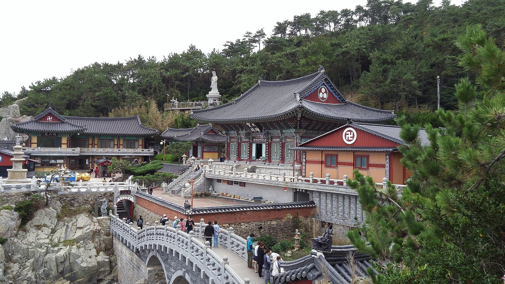
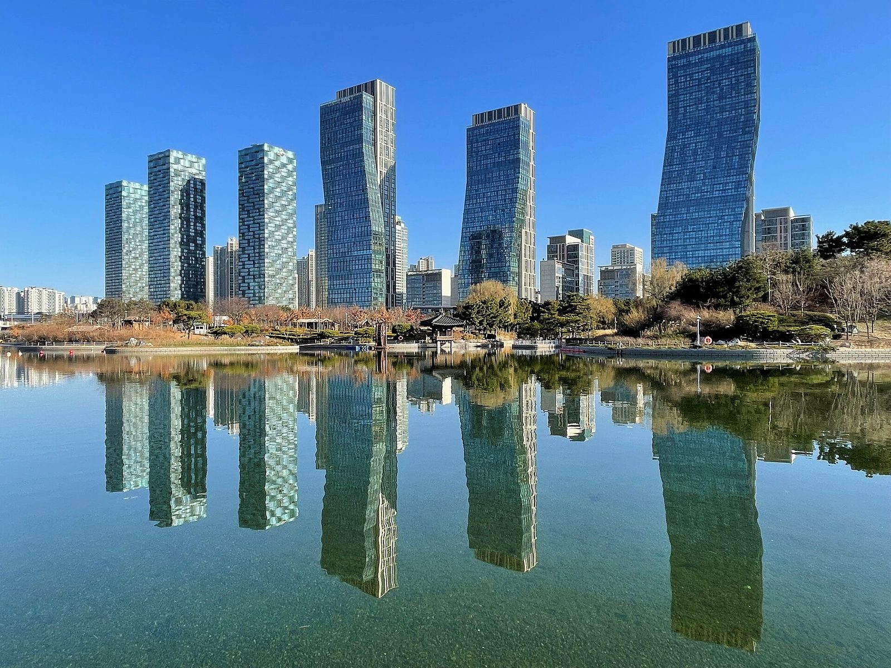

SEOUL01
SEOUL · FIRST TRIP
7 Things First-Time Visitors Should Know About Seoul
The little details that make your first days in Seoul much easier.
Read guide →THE SIMPLE GUIDE TO KOREA
Practical, honest guides to the places, food, culture and everyday details that make Korea easier to understand.
LANDING SOON?
Entry rules and the e-Arrival Card, data, cash, a transit card and the ride from Incheon into Seoul, in the order you need them.
Open the arrival checklist →
TRY IT
START HERE
No complicated travel jargon.
Just the useful stuff.
The little details that make your first days in Seoul much easier.
Read guide →Cards, transfers, fares and what the signs mean.
Read guide →What to buy, how to pay and what you can do there.
Read guide →EXPLORE BY REGION
 SeoulKorea's capital mixes royal palaces and hanok alleys with…
SeoulKorea's capital mixes royal palaces and hanok alleys with…
BusanKorea's second city sits on the sea: beaches at Haeundae…JejuA volcanic island off the south coast with black-rock… GyeongjuThe capital of the ancient Silla kingdom, often called a…
GyeongjuThe capital of the ancient Silla kingdom, often called a… JeonjuHome to Korea's largest hanok village and a city famous for…
JeonjuHome to Korea's largest hanok village and a city famous for… GangneungA seaside city on the east coast known for its beaches…
GangneungA seaside city on the east coast known for its beaches…
IncheonThe gateway to Korea, home to the main international…SokchoA small east coast port town at the foot of Seoraksan…YeosuA harbour city on the south coast with island views, a…WATCH
KOREA, PLAINLY
“The best trips happen
when you know the little things.”
We turn confusing everyday details into simple guides — so you can spend less time figuring Korea out and more time enjoying it.
LATEST GUIDES
A practical guide to visiting a Korean noraebang, from choosing a room and…
Exchanging money in Korea: airport vs city banks vs Myeongdong money changers…
Cafe Hoi An is a Vietnamese-style coffee shop in Dolsan, a handy place to pause…
This Yeosu restaurant specializes in crab dishes, making it a good stop for…